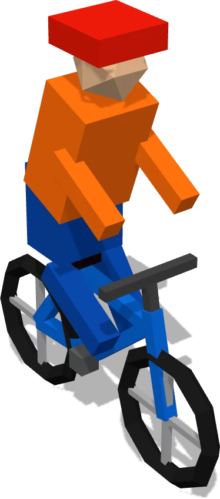
Bike
- Means
- An import or a function call.
- In my-app
Navbar.jsrides over toButton.js.
Paste a GitHub link or a project folder. Every file becomes a building, so you see what matters first.
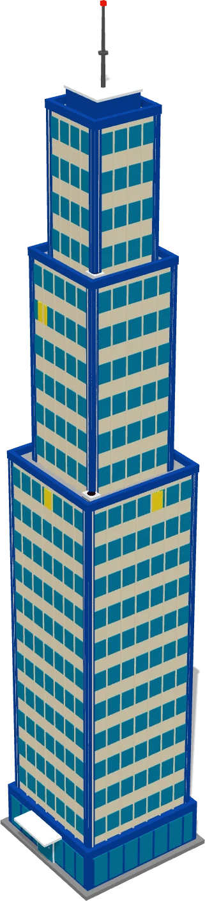
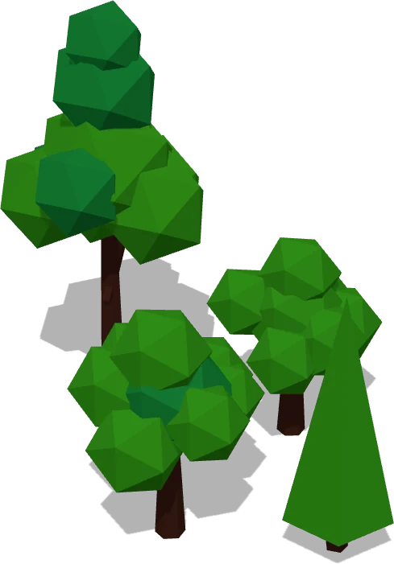
my-app/├── .github/│ └── workflows/│ └── main.yml├── public/│ ├── assets/│ │ ├── logo.svg│ │ └── banner.png│ ├── favicon.ico│ └── index.html├── src/│ ├── components/│ │ ├── Button/│ │ │ ├── Button.js│ │ │ └── Button.css│ │ └── Navbar/│ │ ├── Navbar.js│ │ └── Navbar.css│ ├── hooks/│ │ └── useAuth.js│ ├── utils/│ │ └── helpers.js│ ├── App.js│ └── index.js├── tests/│ ├── App.test.js│ └── helpers.test.js├── .env.example├── .gitignore├── package.json└── README.md
Nineteen files in a small React app. Which one runs first? Which one would break everything if you touched it? The tree looks the same either way.
So you open them one by one, top to bottom, and give up around Navbar.css.
Every folder is a district. Every file is a building, placed where its folder lives.
Height means weight. App.js, the file everything leans on, comes up as the tallest tower. Your .env file becomes a vault: names only, never values.
Then the most-used route lights up. No AI built any of this: the same repo always makes the same city.

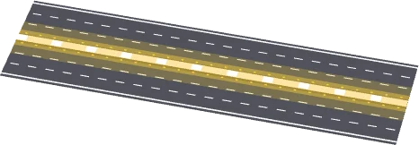
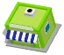
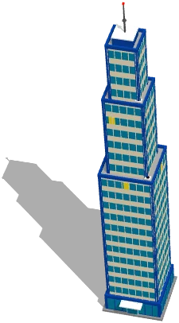
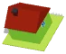
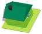
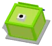
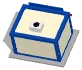
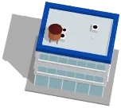
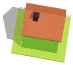
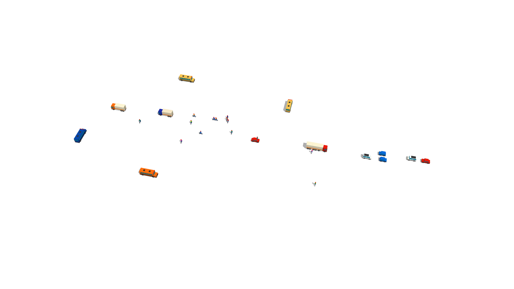
Illustration: an example repo called my-app. Every image here is a real render from the CodeLens city builder; your city is built from your own repo.
Things move between buildings because the code says they can. The routes come from reading the files, not from watching the app run.

Navbar.js rides over to Button.js.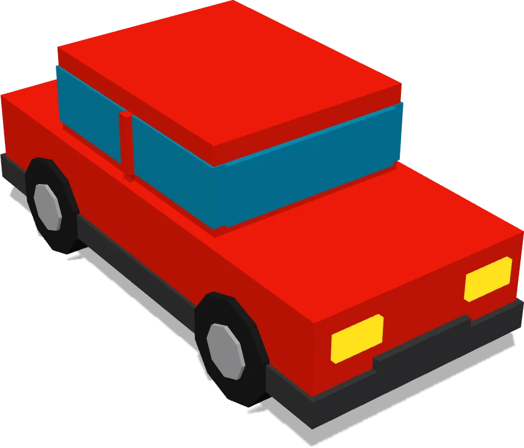
useAuth.js drives out to the Auth API.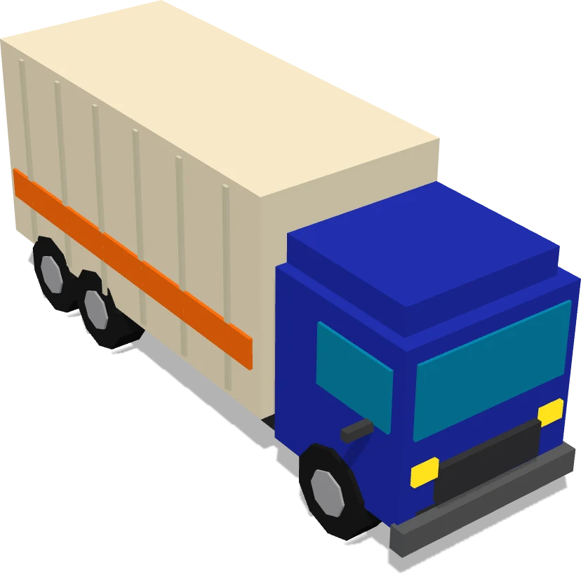
main.yml hauls both test files.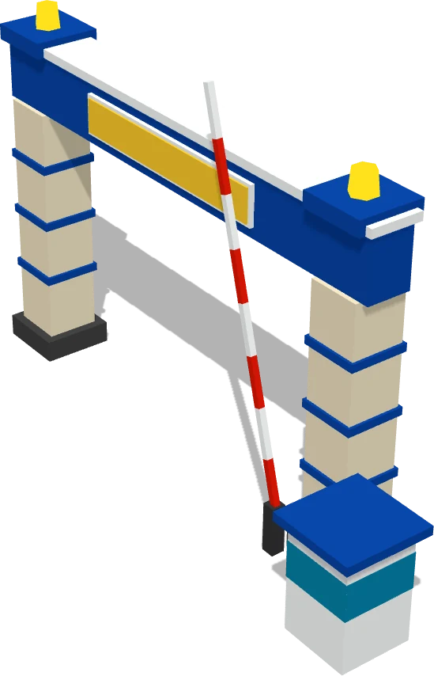
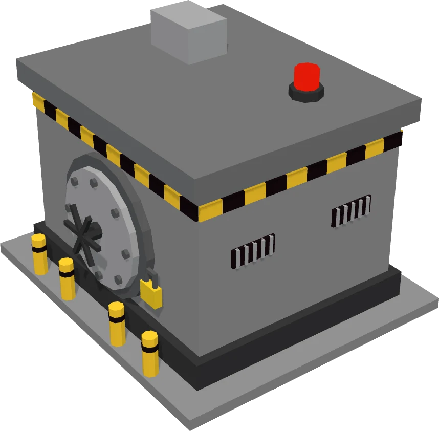
.env.example.Click anything that moves and it says what it carries, where from, and where to.
In its own words, in one or two sentences. Ask a follow-up if it didn't land.
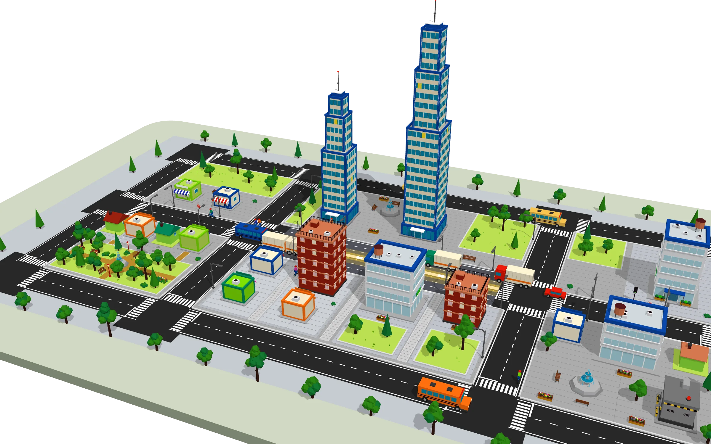
src/App.jsTall building · coreI'm App.js, the tallest tower in town. I lay out the page, pull in the Navbar and Buttons, and ask useAuth who's logged in.
Example answer, for illustration. In CodeLens, answers come from the AI key you paste.
App.js one line at a time.1import React from 'react';
2import Navbar from './components/Navbar/Navbar';
3import Button from './components/Button/Button';
4import { useAuth } from './hooks/useAuth';
5
6export default function App() {
7 const { user, login, logout } = useAuth();
8
9 return (
10 <div className="app">
11 <Navbar user={user} onLogout={logout} />
12 <main>
13 {user ? (
14 <h1>Welcome back, {user.name}</h1>
15 ) : (
16 <Button onClick={login}>Log in</Button>
17 )}
18 </main>
19 </div>
20 );
21}Lines 1 to 4
Four imports. React, the Navbar, the Button and the useAuth hook. In the city, these are the four bikes leaving the App.js tower.
Line 6
App is a function that returns the whole page. Only index.js calls it, once, when the site starts.
Line 7
Asks useAuth who is logged in, and gets back login and logout. This is the line that reaches toward the Auth API, through the Gateway.
Line 11
The Navbar is drawn first. It is handed the user, plus a way to log out.
Lines 13 to 17
Logged in? Greet them by name. Not logged in? Show one Log in button. That is the whole page logic.
Example explanations. AI can be wrong, so treat answers as a guide, not gospel.

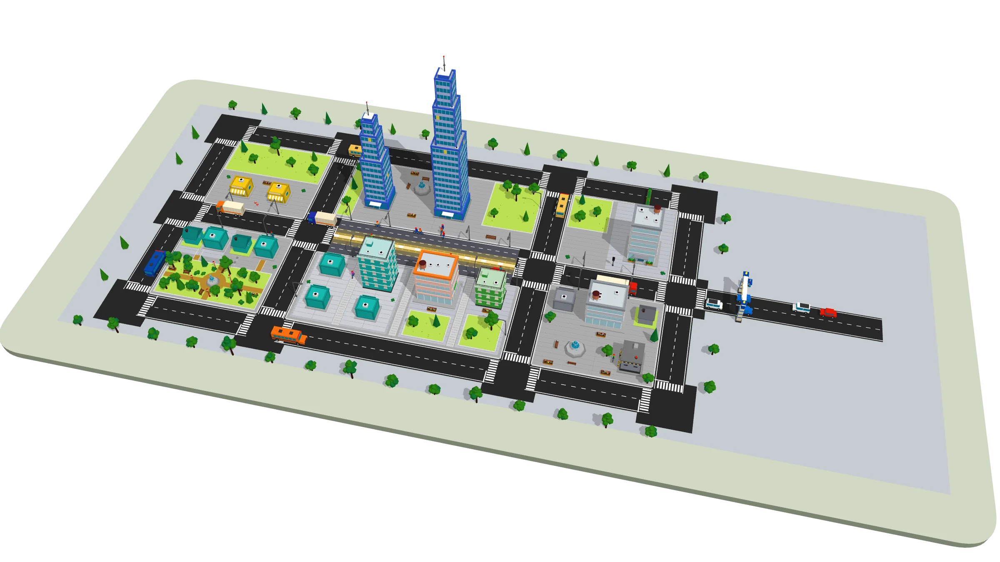
CodeLens reads the README, package.json and .env.example, and writes the steps in order. For my-app it would say:
git clone https://github.com/your-name/my-appcd my-appnpm installcp .env.example .envnpm startAlso on board: a guided tour that flies through the city in the order the code runs, and a flat 2D map that explains, on hover, why two files are linked.
Drop a .zip or a project folder here, or paste a .zip with Ctrl+V
A .zip or folder is read in your browser and never uploaded. Secrets files (.env, keys) are listed by name only, never opened. The city is built with no AI; AI only answers when you ask.